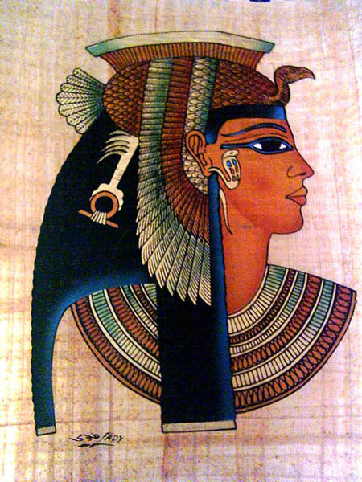
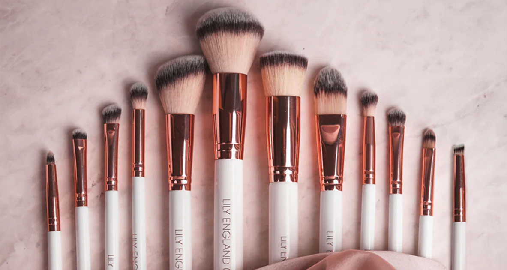

A Evolução Histórica da Maquiagem
Explore a jornada fascinante da pintura corporal e facial, desde os rituais antigos até o mercado contemporâneo.

Origens na Antiguidade e Significado Ritual
A história da maquiagem confunde-se com a própria história da civilização humana. Longe de ser um conceito puramente fútil ou moderno, a ornamentação facial e corporal nasceu atrelada a profundos rituais espirituais, distinções de classes sociais e estratégias de sobrevivência. Na Pré-História, os hominídeos já utilizavam argila, carvão, extratos de plantas e gordura animal para pintar o corpo com o objetivo de se camuflar durante a caça ou para assustar tribos inimigas em períodos de conflito territorial. No entanto, foi no Antigo Egito, por volta de 3000 a.C., que a cosmética atingiu o seu primeiro patamar de sofisticação técnica e importância cultural e medicinal.
Os egípcios, tanto homens quanto mulheres de alta linhagem como faraós e nobres, utilizavam o famoso "kohl" — uma mistura de galena, cinzas e minerais — para delinear os olhos de maneira marcante. Esse traço escuro e geométrico possuía um triplo propósito: além de ser um padrão estético de extrema beleza que homenageava os deuses Hórus e Rá, o kohl funcionava como um protetor ocular natural, repelindo os raios solares intensos do deserto e prevenindo infecções causadas por poeira e insetos. Figuras icônicas como a rainha Cleópatra e Nefertiti tornaram-se símbolos eternos desse cuidado, utilizando também sombras feitas de malaquita triturada para obter tonalidades esverdeadas e pigmentos de óxido de ferro para avermelhar os lábios e as bochechas.
Em outras civilizações da antiguidade, como na Grécia e em Roma, os padrões estéticos mudaram. Os gregos valorizavam uma beleza mais sutil e natural, ligada à pureza e à simetria matemática. As mulheres romanas de alta classe, por sua vez, buscavam uma pele extremamente alva como símbolo de nobreza, demonstrando que não precisavam trabalhar sob o sol. Para alcançar essa palidez, recorriam frequentemente a misturas perigosas contendo cerusa (carbonato de chumbo) e giz, substâncias altamente tóxicas que eram absorvidas pela derme e causavam o envelhecimento precoce, a perda de dentes e, em casos severos, o envenenamento fatal de suas usuárias.
A Revolução Industrial e a Democratização dos Cosméticos
Durante a Idade Média e o Renascimento, a maquiagem passou por intensos períodos de rejeição por parte das autoridades religiosas, que a associavam à vaidade excessiva e ao engano visual. Contudo, o verdadeiro ponto de virada tecnológico e sociológico ocorreu com o advento da Revolução Industrial, a partir do século XVIII e início do século XIX. A mecanização dos processos produtivos transformou a manufatura artesanal de cosméticos em uma produção em larga escala, permitindo que fórmulas antes restritas à realeza e à aristocracia se tornassem acessíveis para a classe trabalhadora urbana nascente.
A introdução da química industrial permitiu a substituição gradual de ingredientes nocivos e venenosos por compostos sintéticos mais estáveis e seguros para a saúde humana. Descobriu-se, por exemplo, que o óxido de zinco poderia substituir o chumbo nas fórmulas de pós faciais sem causar danos biológicos, oferecendo uma cobertura impecável e saudável. Esse avanço científico quebrou os antigos estigmas que ligavam os cosméticos à toxicidade. Ao mesmo tempo, a proliferação de sabões industriais e manuais de etiqueta burguesa começaram a redefinir o conceito de higiene pessoal, fazendo com que o cuidado com a pele se tornasse um hábito diário valorizado na sociedade oitocentista.
A publicidade impressa em jornais e revistas de moda também desempenhou um papel revolucionário nesse período de transição. Pela primeira vez na história, marcas podiam dialogar diretamente com o público feminino de diferentes regiões, criando o desejo de consumo por produtos padronizados. Cremes hidratantes, águas de colônia e pequenos potes de tintura labial começaram a ser comercializados em lojas de departamentos, estabelecendo as bases do mercado de consumo de beleza que conhecemos hoje em dia.
O Século XX e a Explosão da Indústria da Beleza
Se as bases industriais foram lançadas no século XIX, foi no século XX que a maquiagem viveu sua era de ouro e transformou-se em uma manifestação cultural de massa. Esse fenômeno foi impulsionado diretamente pelo nascimento do cinema de Hollywood e pela emancipação feminina decorrente das transformações sociais pós-guerras. As atrizes do cinema mudo precisavam de maquiagens extremamente pesadas e contrastantes para que suas expressões fossem captadas pelas lentes ortocromáticas da época. Cientistas e inventores como Max Factor e Maurice Levy criaram, respectivamente, bases adequadas para as telas e o primeiro tubo de batom metálico retrátil com mecanismo de deslize, trazendo praticidade ao uso diário.
Abaixo, destacam-se os principais elementos visuais e movimentos históricos que definiram a estética de cada período desse século transformador:
Anos 1920 (A Era das Melindrosas): Marcados pela rebeldia jovem e a busca pelo voto feminino. As mulheres cortavam os cabelos curtos e usavam batons em tons de vinho escuro desenhando o famoso "arco de cupido" bem marcado, acompanhado por olhos esfumados com muito carvão e sobrancelhas finíssimas caídas para o lado.
Anos 1950 (O Classicismo de Hollywood): Influenciados pelo New Look da moda. A estética valorizava a feminilidade clássica e sofisticada, caracterizada por uma pele perfeitamente corrigida, olhos delineados no estilo gatinho bem preciso e lábios pintados com tons vibrantes de vermelho puro.
Anos 1960 (A Revolução Jovem e Futurista): O foco mudou completamente para a região dos olhos. Modelos como Twiggy popularizaram o uso de cílios postiços imensos aplicados tanto na pálpebra superior quanto na inferior, côncavos marcados de forma geométrica em tons de branco e preto e lábios apagados com batons nude cor de boca.
Anos 1980 (A Era do Excesso e do Colorido): Ditados pela música pop, pelas discotecas e pela entrada massiva das mulheres no mercado corporativo. A maquiagem tornou-se uma ferramenta de expressão de poder, abusando de blushes marcados em tons de rosa choque, sombras coloridas que iam até as sobrancelhas e batons cintilantes.
Nas últimas décadas do século XX e início do século XXI, a indústria direcionou seus esforços para a diversidade de tons de pele e para a criação de maquiagens multifuncionais que tratam a derme enquanto cobrem imperfeições. Hoje, conceitos como sustentabilidade, fórmulas veganas, produtos cruelty-free e a quebra de barreiras de gênero mostram que a maquiagem continua cumprindo o seu papel original: ser um espelho vivo das transformações políticas, sociais e tecnológicas da humanidade.
Quer saber mais sobre técnicas de maquiagem?

Clique na imagem para conferir.